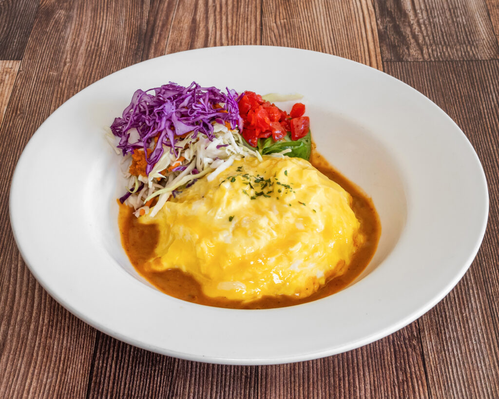
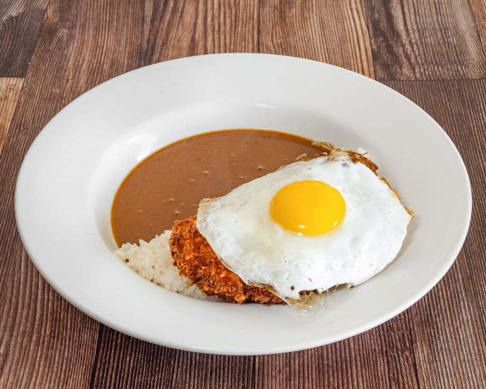
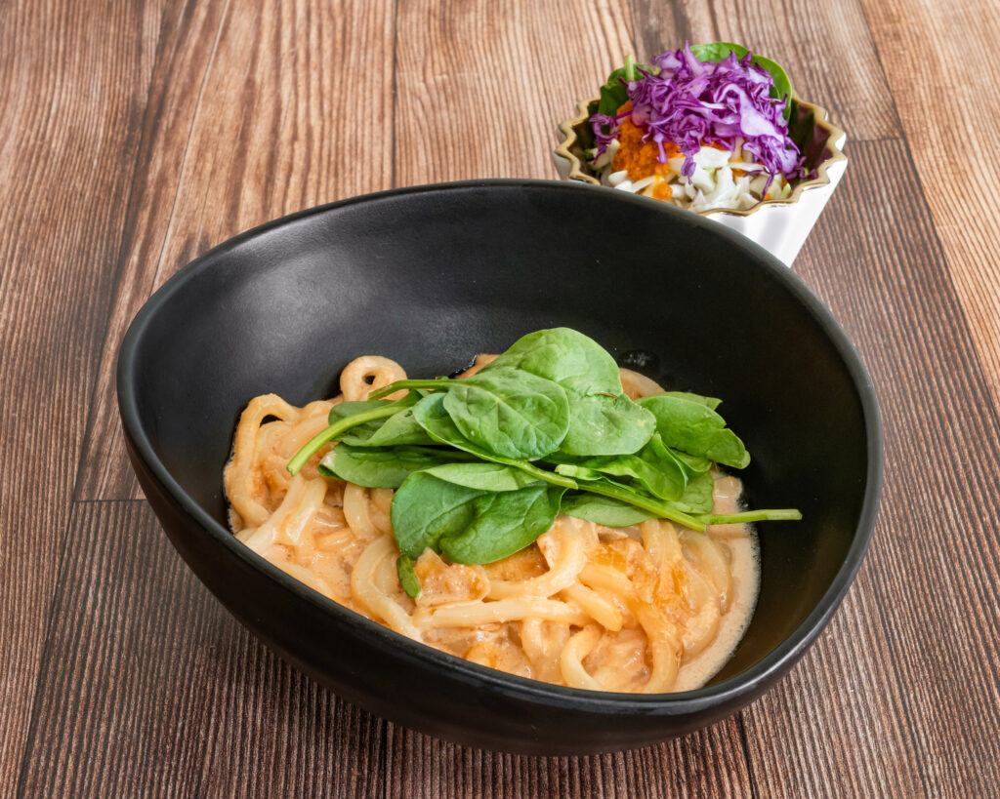
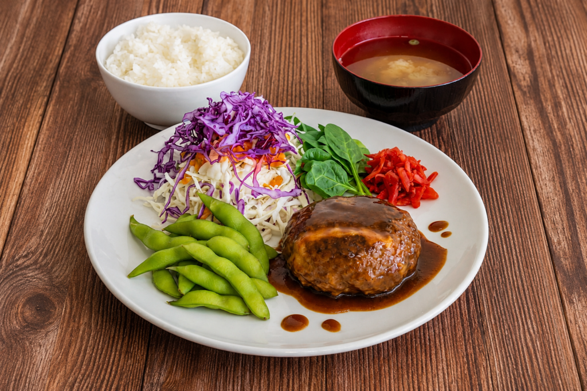

Yōshoku — Japanese comfort cooking, from Kyoto to California.
Yōshoku is Japan's century-old love letter to Western cooking — omelettes over seasoned rice, golden fried cutlets, silky demi-glace, pasta touched with dashi. At DEMI we make these dishes the way they're loved in Japanese homes and kissaten: carefully, generously, and from scratch.

A fluffy Japanese omelette draped over savory seasoned rice, finished with our house demi-glace.

Crispy panko pork cutlet over Japanese curry simmered with onions, carrots & potatoes. Rice or bread.

Creamy cod-roe sauce with butter and a hint of dashi.

Chef Demi Ebara came to California from Kyoto in 2011 and noticed something: to most of her new neighbors, Japanese food meant sushi and ramen — and almost nothing else. The food she actually grew up eating — curry rice, omurice, korokke, hambāgu — was nowhere to be found.
So in 2016 she and her husband, Arthur de la Cueva, opened the first Demiya in San Jose to share that home-style cooking. Today the Demiya family includes five Bay Area locations, in San Jose, Cupertino, Dublin, Fremont and Emeryville.
DEMI is their sixth restaurant and their most personal — an elevated yōshoku kitchen in downtown Palo Alto, with a menu that is largely new: Japanese pastas, curry doria, katsu sandos, teishoku-style plates, and a weekend breakfast, in an intimate room of about twenty-five seats with a sunny backyard patio.
Explore the MenusLoading guest reviews…
Weekend breakfast service — hours to be confirmed.
A few steps off Waverley, in the heart of downtown. About twenty-five seats inside, plus a small backyard patio.
Get Directions